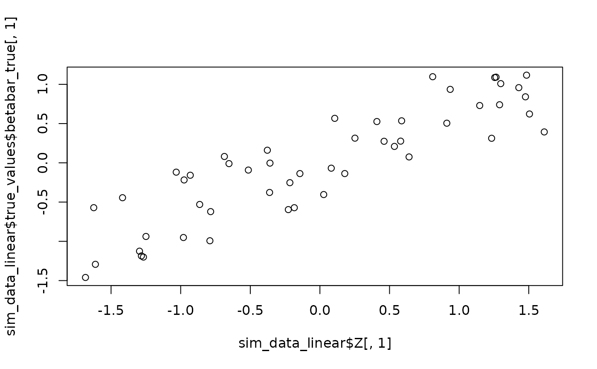
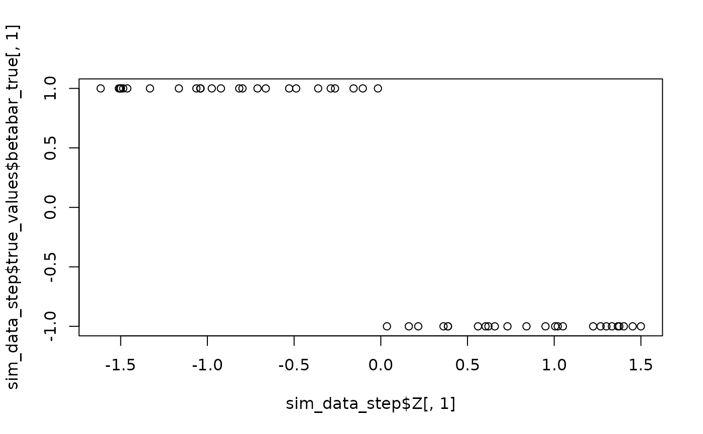

Simulate Hierarchical Multinomial Logit Data
sim_hier_mnl.RdGenerates simulated data suitable for testing hierarchical multinomial logit models, particularly those involving individual-specific covariates (Z) influencing coefficients (beta_i). Supports various functional forms for the Z-beta relationship and mixture models for residual heterogeneity.
Usage
sim_hier_mnl(
nlgt = 300,
nT = 10,
p = 3,
nz = 5,
nXa = 2,
nXd = 1,
const = TRUE,
z_dist_func = function(n, d) matrix(stats::runif(n * d, -1, 1), n, d),
standardize_Z = TRUE,
beta_func_type = "linear",
beta_func_args = list(),
ncomp = 1,
mixture_comps = NULL,
sigma_inv_diag = 1,
Xa_dist_func = function(n, p, na) matrix(stats::runif(n * p * na, -1, 1), ncol = p *
na),
Xd_dist_func = function(n, nd) matrix(stats::rnorm(n * nd), ncol = nd),
seed = NULL
)Arguments
- nlgt
Integer. Number of individuals or cross-sectional units.
- nT
Integer. Number of choice observations per individual.
- p
Integer. Number of choice alternatives (including outside option if any).
- nz
Integer. Number of demographic/individual-specific variables in Z. If
nz = 0, no Z matrix is generated,betabar_trueis set to zero, andbeta_func_type/beta_func_argsare ignored.- nXa
Integer. Number of alternative-specific variables in X.
- nXd
Integer. Number of choice-invariant variables in X (e.g., price).
- const
Logical. Include p-1 intercepts in the model?
- z_dist_func
Function. A function to generate the Z matrix. Must accept arguments
n(nlgt) andd(nz) and return an n x d matrix. Default:function(n, d) matrix(runif(n*d, -1, 1), n, d).- standardize_Z
Logical. Standardize the generated Z matrix (mean 0, sd 1)?
- beta_func_type
Character. Specifies the functional form mapping Z to the systematic component of beta (
betabar_i). Ignored ifnz = 0. Options:"linear": Linear functionbetabar_i = Z_i %*% Delta. RequiresDeltainbeta_func_args."step": Step function based on one Z variable. Requirescutoff,beta_1,beta_2,Z_indexinbeta_func_args."friedman": Friedman benchmark function (modified) based on first 5 Z variables. Requirescoef_indexinbeta_func_argsto specify which coefficient it applies to (others are zero)."custom": A user-defined function provided inbeta_func_args$func.
- beta_func_args
List. Arguments needed for the chosen
beta_func_type. Ignored ifnz = 0.For
"linear":list(Delta = matrix(runif(ncoef * nz), nrow=nz)). Delta isnz x ncoef.For
"step":list(cutoff = 0, beta_1 = rep(-1, ncoef), beta_2 = rep(1, ncoef), Z_index = 1).beta_1/beta_2are vectors of lengthncoef.Z_indexis the column of Z to use.For
"friedman":list(coef_index = 1).nzmust be >= 5. The function is applied tobetabar_i[coef_index], others are 0.For
"custom":list(func = function(Zi) { ... }). The function must take a vectorZi(a row of Z) and return a vectorbetabar_iof lengthncoef.
- ncomp
Integer. Number of components in the normal mixture for residual heterogeneity (
eps_i).- mixture_comps
List. Optional pre-specified mixture components. A list of length
ncomp, where each element islist(mu = ..., rooti = ...).muis the mean vector (lengthncoef),rootiis the upper Cholesky factor of the inverse covariance matrix (ncoef x ncoef). IfNULL, components are generated based onsigma_inv_diag.- sigma_inv_diag
Numeric. Diagonal value for the inverse covariance matrix (precision) of mixture components if
mixture_compsisNULL. Assumes identity covariance scaled by this.- Xa_dist_func
Function. Function to generate alternative-specific variables
Xa. Takesn(nT),p,na(nXa) and returns a matrix (usuallyn x (p*na)or similar structure expected bycreateX). Default:function(n, p, na) matrix(runif(n*p*na, -1, 1), ncol=p*na).- Xd_dist_func
Function. Function to generate choice-invariant variables
Xd. Takesn(nT),nd(nXd) and returns ann x ndmatrix. Default:function(n, nd) matrix(rnorm(n*nd), ncol=nd).- seed
Integer. Optional random seed for reproducibility.
Value
A list suitable for direct use as the Data argument in
rhierMnlRwMixture, containing:
p: Number of alternatives.lgtdata: List of lengthnlgt. Each elementiislist(y=y_i, X=X_i, beta=beta_i, betabar=betabar_i).Z: Thenlgt x nzmatrix of individual-specific covariates (standardized if requested). Additionally, the list containstrue_values:true_values$beta_true:nlgt x ncoefmatrix of truebeta_i.true_values$betabar_true:nlgt x ncoefmatrix of truebetabar_i = f(Z_i).true_values$true_params: List containing parameters used for generation (beta_func_type,beta_func_args,mixture_comps,pvec).true_values$dimensions: List containing key dimensions used (p,nlgt,nT,nz,ncoef, etc.).
Examples
# Simple linear example
sim_data_linear <- sim_hier_mnl(nlgt = 50, nT = 5, p = 3, nz = 2, nXa = 1, nXd = 0,
beta_func_type = "linear", seed = 123)
plot(sim_data_linear$Z[,1], sim_data_linear$true_values$betabar_true[,1]) # Visualize linear

# Step function example
sim_data_step <- sim_hier_mnl(nlgt = 50, nT = 5, p = 3, nz = 2, nXa = 1, nXd = 0,
beta_func_type = "step",
beta_func_args = list(Z_index = 1),
seed = 456)
plot(sim_data_step$Z[,1], sim_data_step$true_values$betabar_true[,1]) # Visualize step
